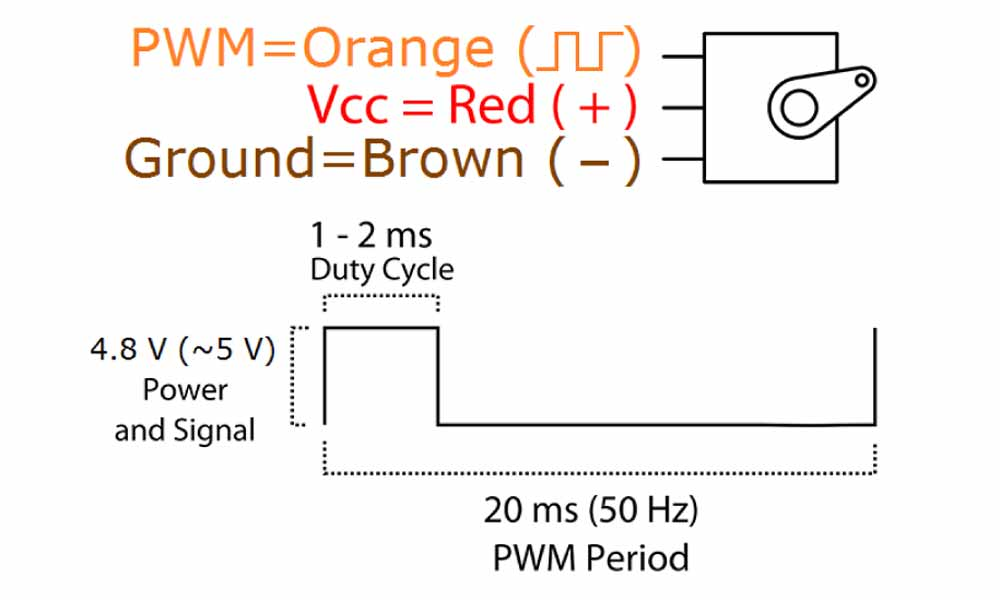

As my final project needs a mechanism to rotate and flip, I was really looking forward to this week's assignment so that though the process of doing it, I would have a better idea of how to proceed for my final project. In my mind, I know I would be working with some kind of motors, but exactly what type, I was not so certain until this week. I was reading this book called Making things move and I was able to have a better understanding of what different motors do.
I will be trying to drive 2 x 9G micro servo with a microcontroller board, not because they are special but because they are available in the lab. The datasheet of the motors states the following specifications:

The sample board on our class page looks like this:
After discussing with the local instructor, we were advised to redesign the board using another microcontroller chip, the ATtiny45, and also to build the board without a 5V regulator and a 20MHz crystal. Referring to the datasheet of ATtiny45, and comparing the pins assignment with the t44, I made some notes on my memo pad. Scribbling down and drawing the diagram really helped, and I found myself referring to this scribble ever so often when I was working in Eagle to design the schematic and the board.
I soon realised that ATtiny85 microcontroller is not compatible with the "servo.h" library in Arduino because ATtiny85 only has 8 bit counters, whereas Servo-library relies on having a 16-bit timer available. If I were using the ATtiny44, it would pose no issue because ATtiny44 has a 16 bit counters. I tried to workaround this by trying out two other libraries "servo8bit.h" and "SoftwareServo.h". It seems that SoftwareServo.h is okay to use.
#includeSoftwareServo myServo1; SoftwareServo myServo2; int angle = 0; void setup() { myServo1.attach(0); myServo2.attach(3); } void loop(){ for(angle = 1; angle < 180; angle++) { myServo1.write(angle); delay(20); myServo2.write(angle); delay(10); SoftwareServo::refresh(); } for(angle = 180; angle > 1; angle--) { myServo1.write(angle); delay(20); myServo2.write(angle); delay(10); SoftwareServo::refresh(); } }
I was only able to document the WinAVR programming process in week 13 when in fact, this topic has been covered as early as week 4. At that time I didn't understand C programming and was trying very hard to avoid avrdude which I couldn't understand. So all the while, I have been using Arduino IDE to flash my chip. It is only now that I am a little more ready to face the challenge and try to understand about AVR programming. I think this is a huge leap for me and I am happy to have a better understanding about AVR programming. For windows users, we need to download WinAVR.
1. cp hello.servo.44.2.make makefile // compiling the c program into a "makefile"
2. make // generate 2 files; the .hex file and the .out file
3. avrdude -P com4 -c stk500v1 -b 19200 -p t45 -U flash:w:hello.servo.44.2.c.hex //stk500v1 is my arduino programmer;
//t45 is the ATtiny45 chipset;
//hello.servo.44.c.hex is the hex file you want to flash
Because of the changes to my board and the change of chipset to ATtiny45, the following modifications to the C programme is essential:
#define PWM_port PORTB // ATtiny45 only has PortB #define PWM_direction DDRB // Data Direction Registers B #define PWM_pin_0 (1 << PB0) // PortB Pin0 #define PWM_pin_1 (1 << PB3) // PortB Pin3Changes required in the make file:
MMCU=ATtiny45 // and all occurrence of t44 will be replaced by t45 F_CPU = 8000000 // Instead of an 20MHz external crystal, we are using 8MHz internal clockSuccessfully flashing the microchip set:
C:\Users\yoruichin\Dropbox\FAB\Week 13 - Output\servo\2ch>cp hello.servo.44.2.make makefile
C:\Users\yoruichin\Dropbox\FAB\Week 13 - Output\servo\2ch>make
avr-gcc -mmcu=attiny45 -Wall -Os -DF_CPU=9600 -I./ -o hello.servo.44.2.out hello.servo.44.2.c
avr-objcopy -O ihex hello.servo.44.2.out hello.servo.44.2.c.hex;\
avr-size --mcu=attiny45 --format=avr hello.servo.44.2.out
AVR Memory Usage
----------------
Device: attiny45
Program: 312 bytes (7.6% Full)
(.text + .data + .bootloader)
Data: 0 bytes (0.0% Full)
(.data + .bss + .noinit)
C:\Users\yoruichin\Dropbox\FAB\Week 13 - Output\servo\2ch>
C:\Users\yoruichin\Dropbox\FAB\Week 13 - Output\servo\2ch>avrdude -P com4 -c stk500v1 -b 19200 -p t45 -U flash:w:hello.servo.44.2.c.hex
avrdude: please define PAGEL and BS2 signals in the configuration file for part ATtiny45
avrdude: AVR device initialized and ready to accept instructions
Reading | ################################################## | 100% 0.03s
avrdude: Device signature = 0x1e9206
avrdude: NOTE: FLASH memory has been specified, an erase cycle will be performed
To disable this feature, specify the -D option.
avrdude: erasing chip
avrdude: please define PAGEL and BS2 signals in the configuration file for part ATtiny45
avrdude: reading input file "hello.servo.44.2.c.hex"
avrdude: input file hello.servo.44.2.c.hex auto detected as Intel Hex
avrdude: writing flash (332 bytes):
Writing | ################################################## | 100% 0.53s
avrdude: 332 bytes of flash written
avrdude: verifying flash memory against hello.servo.44.2.c.hex:
avrdude: load data flash data from input file hello.servo.44.2.c.hex:
avrdude: input file hello.servo.44.2.c.hex auto detected as Intel Hex
avrdude: input file hello.servo.44.2.c.hex contains 332 bytes
avrdude: reading on-chip flash data:
Reading | ################################################## | 100% 0.27s
avrdude: verifying ...
avrdude: 332 bytes of flash verified
avrdude: safemode: Fuses OK
avrdude done. Thank you.
C:\Users\yoruichin\Dropbox\FAB\Week 13 - Output\servo\2ch>